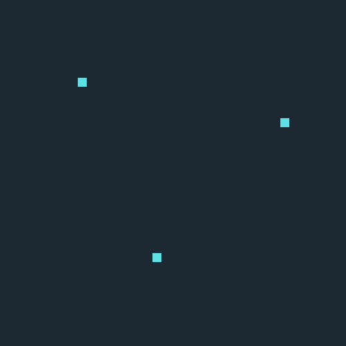

What's the world's most efficient language?
January 23rd, 2022
Edit: This has now made it to the front page of HackerNews. I'm sure a lot of valid criticism will come from it. Do note that I'm more curious in the discussion than the experiment itself (I'm already learning from the comments). I consistently claim here to not be qualified for an analysis, having done this for fun. The "Deriving information" section ends with "...the only thing I'm really measuring is efficiency from the perspective of printer ink. But so be it, I'll measure that.". Also check out Limitations.
A while ago I was sitting on a plane and in a moment of boredom picked up the in-flight magazine.
The magazine had a little travel article, and it was written in English on one page and Thai on the other.
The Thai version was so much shorter that I started to wonder if it was more efficient. In other words, was it able to convey the same exact meaning to the reader with fewer "resources" than the English version?
The topic came up again when I was speaking to a Japanese man at a language exchange meetup. He said:
"You can technically write Japanese without Kanji, but it is a lot less efficient."
So what is language efficiency? And how can we measure it?
Thoughts from a nobody
One can't find a lot resources about "language efficiency" very easily, and the majority of my findings related to spoken language. Here are two good reads on this topic for those interested:
But I was interested in written language, simply because something in me told me I could quantify it, without any formal linguistics knowledge.
As you'd imagine, quantifying the efficiency of a language is a complicated task, one that I'm not at all qualified to explore in a scientifically significant way.
But I thought I'd do a little experiment.
Could I gather the same text in various languages that I'm certain (as certain as you can be) conveys the exact the meaning, and then calculate from the language snippets how much information they contain?
If I could do that, I could arrive at the following measure of efficiency: meaning / amount of information.
Meaning is supposed to be a constant, thus the more information the body of text contains, the lower its "meaning per piece of information" ratio, making the language less efficient.
In essence, if we take information to be information = noise + signal, we're looking for the signal density of languages, or, conversely, the noise ratio - how much stuff is in there that doesn't need to be?
So how could I derive that information value?
Deriving information
When brainstorming about this, a few immediate indicators might come to mind, like total number of characters.
Characters, however, are not very uniform - they vary widely within and across languages. Consider:
| Mandarin (Simplified) | Finnish |
|---|---|
| 我爱咖啡 | Minä rakastan kahvia |
Both sentences say "I love coffee".
If we're counting characters, Mandarin blows Finnish out of the water in efficiency.
But most people looking at this will immediately notice that Mandarin characters are much more condensed. They make up for in "complexity" what they sentence is missing in length.
And that "complexity" is what we're looking to measure.
Imagine I gave you a task to try and find a pattern in the following 2 different images. The task is "done" when you either find a pattern or decide you can't come up with one.
Which would take your brain more time to conclude - A or B?
| A | B |
|---|---|
|  |
I believe the answer would be B for most of us.
B has more information, more data - in this case, non-background colored "pixels" - that our brain needs to process before it makes sense of what it is seeing.
The same should hold true of characters. When reading, in order for our brain to determine the meaning of the character it is seeing (if it even knows it), it needs to take in all the pixels making up that character and run them across its "database" of known patterns to try and find a hit.
So there's my information metric: pixels.
To derive the amount of information present in a snippet of text, we can count the total "used" pixels i.e. on a black-on-white representation, count the black pixels.
Now, at this point I will mention once again that a true analysis of efficiency should be much more nuanced, and it's not something I'd be able to undertake.
In fact, a friend, upon hearing about this idea, said the only thing I'm really measuring is efficiency from the perspective of printer ink. But so be it, I'll measure that.
Approach
This post is bound to be long, so I'll spare many of the details here. But essentially, in order to test this out, I did the following:
1: Selected a snippet of text that I would be likely to find good translations for in various languages
For this I landed on the Google Privacy Policy. And not the whole thing either. A tiny piece. So tiny that a real scientist would laugh at the idea of this whole thing even being called "an experiment".
But you must keep in mind the name of this blog: "Sunday Afternoon". Stuff contained here is often done over a single weekend just for the fun of it, as was the case with this, so I needed to keep things simple.
Nevertheless, I picked the Google Privacy Policy because:
- I could easily scrape it in hundreds of languages
- It needs to convey the exact same meaning in all languages
- It has legal implications, meaning if Google puts it up online in a language, it must have been thoroughly checked
- Google probably knows a thing or two about translations
The exact snippet I picked was:
"When you use our services, you’re trusting us with your information. We understand this is a big responsibility and work hard to protect your information and put you in control. This Privacy Policy is meant to help you understand what information we collect, why we collect it, and how you can update, manage, export, and delete your information."
And I verified it said exactly this in English, Portuguese, Spanish, Finnish, German, and Icelandic (the last 2 with external help). That is, by actually reading it, other languages checked out on Google Translate.
2: Pull and parse the data
For this I got a list of all existing locales, and pulled all the HTML from each language's privacy policy from https://policies.google.com/privacy?hl=<locale>.
I then found the desired paragraph and extracted it into a separate file for each language.
For the more technical readers, the paragraph's CSS selector was consistent across all languages, which is how I managed to extract it. It's easy to confirm you extracted the right thing by popping the snippet into a translator.
3: Map out how many pixels each character takes
Once I had all the clean data, I iterated over every character in the dataset and drew an image for each using Python's Pillow library.
From that image I could then count the total number of black pixels and generate a map of the results.
Here are the basics of how this works:
# Python
arial_unicode = ImageFont.truetype('/Library/Fonts/Arial Unicode.ttf', 60)
img = Image.new('RGB', (200, 200), 'white')
draw = ImageDraw.Draw(img)
draw.text((75,0), letter, font=arial_unicode, fill='#000000')
pixels = list(img.getdata())
total_black_pixels = len(list(filter(lambda rgb: sum(rgb) == 0, pixels)))
4: Build up the results
Having determined the black pixel value (information) for each character, I could then derive how much information (again, in my limited definition), each language's written representation was using to convey the same meaning.
Some manual intervention here was needed, and I ended up looking through every picture of a character that the script generated to make sure it was valid. Two key things here were removing from the results the languages for which generic squares drawn when the font didn't some or all of its characters (e.g. Amharic), as well as making sure the drawings were containing the full character.
Results
The most efficient language prize in my little child experiment was Gujarati, followed by Hebrew, and then Arabic. Gujarati and Hebrew also had some of the lowest mean pixel/character ratio in the dataset.
The least efficient ones were Japanese, Malay, and Canadian French. You heard that right. Out of all the French dialects included in the dataset, Canadian was the only one with different wording. I'd be curious to hear from someone who speaks French about whether the Canadian version has words that are actually not used elsewhere or if it's just a matter of choice of words.
English, by the way, was eighth on the list.
Particularly interesting to me was comparing results from language/dialects in the same language group, such as the French from France vs. France from Canada comparison mentioned above. Here are a few takeaways from the results:
American English > British English
American English performed slightly better than British English, and this one actually makes intuitive sense to me.
In most cases when there's a variation between the two, British English tends to be the one with additional letters. Think "color" vs. "colour", "traveled" vs. "travelled", etc.
These additional letters are almost decidedly redundant, inefficient. Given that there is a variation of the language without these extra letters, one can infer that they are not very important if the objective is to convey meaning efficiently.
Consider the r in cart for instance. Without that r the word would clash with an existing word - cat, so the letter is significant in establishing meaning. The u in color is not, however.
The Chinese Language Group
This was a surprising one to me. Simplified Mandarin Chinese was expectedly more efficient than Traditional Mandarin Chinese, but both were beaten out by Cantonese using traditional characters.
Also, if you ever wanted to put a number to the complexity of Chinese characters, they are around 3x more "complex" (pixels/char ratio) than the average of the dataset.
Portuguese from Brazil > Portuguese from Portugal (to my utter delight)
When reading both sentences one can indeed notice inherent language differences, like the lack of the word "você" in Portuguese from Portugal. However, in some cases the differences were merely a word choice thing (e.g. "Entendemos" vs. "Compreendemos").
Spanish from Spain > Spanish from Latin America
The biggest disparity within a language group happened with Spanish, with Spanish from Spain ranking at 14 and Latin American Spanish landing at 32. The vast majority of differences are purely arbitrary word selections, though.
Simplified Results
Dialects were collapsed if they used the same exact sentence.
| Position | Language | Total pixels | Total chars | Mean pixels/char |
|---|---|---|---|---|
| 1 | Gujarati | 62814 | 418 | 150.27 |
| 2 | Hebrew | 63533 | 313 | 202.98 |
| 3 | Arabic | 66116 | 257 | 257.26 |
| 4 | Kannada | 73659 | 507 | 145.28 |
| 5 | Lithuanian | 78828 | 311 | 253.47 |
| 6 | Thai | 80055 | 333 | 240.41 |
| 7 | Swedish | 81817 | 343 | 238.53 |
| 8 | English (United States) | 82897 | 345 | 240.28 |
| 9 | English (United Kingdom) | 84774 | 351 | 241.52 |
| 10 | Croatian/Bosnian | 85245 | 344 | 247.81 |
| 11 | Slovenian | 87038 | 343 | 253.76 |
| 12 | Czech | 88275 | 338 | 261.17 |
| 13 | Afrikaans | 88286 | 364 | 242.54 |
| 14 | Spanish (Spain) | 88551 | 354 | 250.14 |
| 15 | Bengali | 88585 | 382 | 231.9 |
| 16 | Slovak | 88887 | 344 | 258.39 |
| 17 | Polish | 88961 | 346 | 257.11 |
| 18 | Persian | 89931 | 388 | 231.78 |
| 19 | Tamil | 90312 | 409 | 220.81 |
| 20 | Italian | 91061 | 381 | 239.01 |
| 21 | Catalan | 91401 | 378 | 241.8 |
| 22 | Serbian | 91404 | 372 | 245.71 |
| 23 | Telugu | 92619 | 459 | 201.78 |
| 24 | Cantonese | 92751 | 101 | 918.33 |
| 25 | Danish | 92778 | 382 | 242.87 |
| 26 | Faroese | 92778 | 382 | 242.87 |
| 27 | Danish | 92778 | 382 | 242.87 |
| 28 | Estonian | 92868 | 350 | 265.34 |
| 29 | Urdu | 93788 | 406 | 231.0 |
| 30 | Punjabi | 93788 | 406 | 231.0 |
| 31 | Urdu | 93788 | 406 | 231.0 |
| 32 | Spanish (Latin America) | 95226 | 376 | 253.26 |
| 33 | Galician | 95886 | 371 | 258.45 |
| 34 | Zulu | 95935 | 355 | 270.24 |
| 35 | Swahili | 96728 | 355 | 272.47 |
| 36 | Basque | 97208 | 368 | 264.15 |
| 37 | Hungarian | 97570 | 375 | 260.19 |
| 38 | Latvian | 98572 | 382 | 258.04 |
| 39 | Finnish | 99466 | 375 | 265.24 |
| 40 | Norwegian | 99588 | 415 | 239.97 |
| 41 | Greek | 99795 | 410 | 243.4 |
| 42 | Vietnamese | 100035 | 403 | 248.23 |
| 43 | Portuguese (Brazil) | 100543 | 391 | 257.14 |
| 44 | Chinese (Simplified) | 100774 | 124 | 812.69 |
| 45 | Ukrainian | 101512 | 357 | 284.35 |
| 46 | Dutch | 102685 | 399 | 257.36 |
| 47 | Marathi | 105126 | 394 | 266.82 |
| 48 | Portuguese (Portugal) | 105385 | 412 | 255.79 |
| 49 | Serbian | 106028 | 365 | 290.49 |
| 50 | Icelandic | 106357 | 417 | 255.05 |
| 51 | Russian | 108623 | 365 | 297.6 |
| 52 | German | 110538 | 431 | 256.47 |
| 53 | Turkish | 111808 | 444 | 251.82 |
| 54 | Malagasy | 113242 | 471 | 240.43 |
| 55 | French | 113242 | 471 | 240.43 |
| 56 | Bulgarian | 115494 | 397 | 290.92 |
| 57 | Hindi | 118592 | 500 | 237.18 |
| 58 | Indonesian | 118687 | 418 | 283.94 |
| 59 | Chinese (Traditional) | 120295 | 138 | 871.7 |
| 60 | Filipino | 123179 | 456 | 270.13 |
| 61 | Korean | 124819 | 231 | 540.34 |
| 62 | French (Canada) | 126583 | 503 | 251.66 |
| 63 | Malay | 128355 | 448 | 286.51 |
| 64 | Japanese | 136036 | 215 | 632.73 |
You can find the full results in a table format on this website here and the CSV results here. These results also include the sentence in each language.
Limitations
The limitations of this little Sunday experiment are many. From the size of the snippet, the lack of extensive validation, to the lack of consideration for variations in writing, the use of only one font that may bias towards certain language families, etc.
But perhaps the most interesting discussions regard how counting pixels may be limited as an approach to measuring efficiency and how we could measure it instead.
Maybe (probably) the sheer amount of "information" is not the only factor contributing to our ability to read text efficiently?
Maybe the fact that Chinese characters were originally representative drawings helps association in the brain despite the extra strokes?
Maybe spaces also play a role and are thus are also a form of information?
Maybe my whole approach to quantifying "information" is wrong?
Either way, I'd be curious to explore this topic further, and would love to hear any thoughts others may have. Feel free to send those to yakko [dot] majuri [at] protonmail [dot] com if you like.
GitHub
You can find my loose snippets of code used for this analysis on the yakkomajuri/lang GitHub repo.